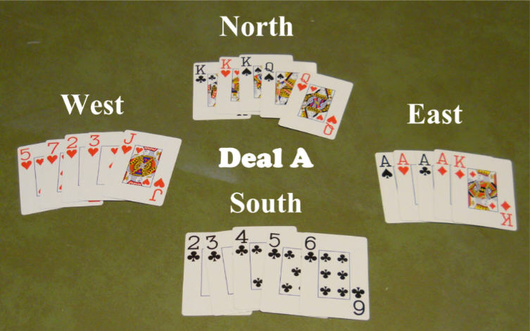
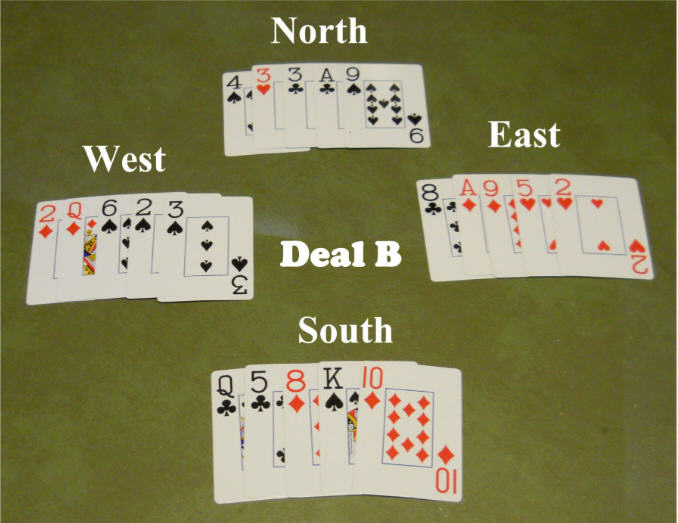

| email - June 2014 |
| by Do-While Jones |
Sam's hatred of God trumps science.
Sam began the conversation with this email.
|
While perusing your essays, I noted one thing missing - evidence FOR young earth creation. I see lots of attacks on evolution, evolutionists, and so forth, but I did not come across a single instance of you writing about positive, scientific evidence indicative of a young earth, fiat creation, or post-flood diversification. You offer lots of snark and bombast, but all you are doing is hurling stones from the sidelines. |
We sent him this one-sentence reply:
|
You are right, we don't promote Biblical ideas. |
|
Yours is the coward's way. I suspect that the real answer is that you know that there is no evidence for biblical creation. You have nothing to offer FOR your bronze age, middle eastern myths, so you just attack and insult and condescend. I like how the desperate creationist always tries to deflect the fact that they have nothing onto evolution. The geological and historical evidence clearly provide no evidence for a world-wide flood ~4500 years ago. There is no biological mechanism for post-flood diversification from a few thousand inbreeding "kind" pairs 4500 years ago to the millions of extant species. There is no "science" for Yahweh making a man from dust. THIS is why all you can do is insult and throw stones from the sidelines. |
So, I asked him,
|
Why can you not honestly investigate the theory of evolution without bringing religion into it? |
He responded:
|
Why can you not do the same? Your "scientific" discussions of many of the topics on your site demonstrate the fact that you have no relevant background in the material. So, like all creationists with vanity websites, you engage in distortion and disinformation to prop up your Faith, all the while pretending that it is all scientific. I can easily demonstrate to you your various failures and misrepresentations on several of your pages if you'd like. |
How can he say we can't help bringing religion into the discussion? All one has to do is read any of our newsletters to see that religion is mentioned very rarely, and only when someone else brings it up, and never as proof of anything. This is one of those rare occasions in which we can't avoid mentioning religion because Sam's personal attacks are rooted in his religious beliefs.
I invited him to correct any scientific error we have published, but he didn't even try. He just made more accusations about my honesty and presumed faith.
There is no point in trying to convince someone like Sam of anything--but I did try to understand his point of view because it might help me have a rational discussion with a reasonable person who holds the same views. I asked him why he believes in evolution and he sent copies of articles written by other people telling why those people believe in evolution. I was tempted to ask him if he was unable to think for himself, but I took this diplomatic approach instead:
|
I see from my email that I phrased my question poorly. I want to know what YOU think the evidence is for evolution--not what other people think. Since you didn't tell me what you think, I have to infer from the articles you quoted that you think that genetic similarity can only be the result of a common biological ancestor, and cannot be evidence of a common designer. Therefore, you must think there is a way to tell the difference. Please tell me what you think that way is. |
At last, I finally got an answer! It wasn't a very good answer; but it's probably the best answer I could expect to get from him.
|
I'm sure so well-read a non-scientist as you is aware of things like the GULO gene and other 'shared errors' used in phylogenetics. What sort of designer would put the same broken genes in different creatures? Would you put a faulty and/or non-used circuit in two different new electronic contraptions because the first old one you designed had that circuit and it worked for that original device? No - that would be stupid and indicative of incompetence. But you imply that your ethereal and evidence-less 'designer' may have done so. After all - who can know what this "designer" (wink wink) had in mind? |
Because his belief in evolution is entirely based on his religious beliefs, he projects his reasoning upon me, and assumes my disbelief in evolution is entirely based on my religious beliefs. The truth is, my analysis has been influenced greatly by my experience gained during the years when I was employed doing what is politely called, "foreign material exploitation." It was very humbling to discover that some of the "stupid" circuits in Soviet weapons were actually so clever that I didn't immediately recognize their genius. "Shared errors" might not be errors at all. They might actually be features that are not correctly understood.
Evolutionists used to talk about how much "junk DNA" there was. This was DNA that supposedly had no purpose, formed by accident. Now scientists know that nearly all that junk DNA isn't junk. It has purpose. (The remaining "junk" probably has purpose, too, but isn't understood yet.) That's why most evolutionists no longer argue that the existence of so much junk DNA is evidence that the DNA molecule formed by accident. "Junk DNA" isn't junk, and "DNA errors" might not be errors.
But suppose those genetic similarities really are errors. Errors don't prove common ancestry. Errors that are easy to make can often be made independently in different situations. (Different people accidentally misspell certain words the same way. That's why Microsoft Word has an autocorrect feature which automatically corrects the spelling of some words. You have to tell Word not to change "hte" to "the" automatically.) If errors don't significantly affect survival, they will not be removed by natural selection. Therefore, a simple-to-make genetic error that does not have serious consequences might arise independently in multiple species and might become established in different species.
I asked Sam how to tell the difference between intentional similarity and accidental similarity. It would be unfair of me not to answer the question myself.
First of all, I must state my belief that it is possible to differentiate purpose from accident. Again, this belief is rooted in my former employment, some of which involved target recognition. A smart bomb needs to be programmed to distinguish a man-made structure (a bridge or an armored vehicle) from a natural feature (a tree or a rock). Algorithms do exist for making the distinction, which I am not at liberty to share.
The game of poker, however, is not subject to security restrictions, so let's see if you can recognize purpose from accident in a friendly game of poker. The photographs below show four hands dealt during a poker game. The hands were dealt twice. The first time was Deal A, and the second time was Deal B.
 |
|---|
In Deal A, West was dealt a flush, North was dealt a full house, East was dealt four-of-a-kind, and I (South) dealt myself a straight flush (the highest hand).
Do you think I dealt those hands from a shuffled deck, or a stacked deck? If you think those hands (which encourage my three opponents to bet large sums of money, only to lose to my straight flush) were honestly dealt from a shuffled deck, I would like to invite you to my high-stakes poker game next Wednesday night.
Now consider Deal B.
 |
|---|
Could those cards have been dealt from a shuffled deck? Yes, they could. In fact, they were.
Why might you believe that Deal B came from a shuffled deck, but Deal A came from a stacked deck? Your first response might be, "The odds against Deal A are so small that it could not possibly have happened by chance." That's the wrong answer. Yes, the odds against Deal A are very small indeed, but it could possibly have happened by chance. I would not bet on it--but it could happen.
But it isn't really a question of probability. The probability that those 20 cards in Deal A were dealt in that order is exactly the same as the probability that the 20 cards in Deal B were dealt in that order. Let me say that again a different way to make sure I make myself perfectly clear. Deal A is no less probable than Deal B. If you shuffle a deck and deal out 20 cards, it is just as unlikely that those 20 cards will match Deal B as Deal A.
But you were able, instinctively, to know that Deal A came from a stacked deck, and Deal B came from a shuffled deck, even though both hands are equally unlikely. Since probability has nothing to do with it, how were you able to recognize my nefarious purpose in Deal A?
It all comes down to "meaning" or "purpose." The four hands in Deal A have meaning, and serve a purpose. (Their purpose is to beat a less powerful hand.) Because it has meaning, there is a name for South's hand in Deal A. It is called "a straight flush"--but there is no name for South's hand in Deal B because it has no meaning, value, or purpose.
If I show you a picture of something you have never seen before, and you don't know what it is, can you tell if it is man-made or not? If the thing in the picture has wheels, or gears, or hinges, then you know it is man-made because wheels, gears, and hinges serve a purpose. You may not know what the purpose is. You may reasonably think it probably has something to do with motion; but even though you don't know the purpose, you can recognize that the object in the picture must be man-made because things like wheels, gears and hinges have a purpose.
Things that have a purpose don't happen by accident. If you can spot a purpose in something, it didn't happen by accident.
BUT, you might argue, there is a plant called a Venus flytrap. It has hinges in its leaves. Those hinges weren't man-made! Yes, they weren't man-made and they do have a purpose.
|
The Venus flytrap (also Venus's flytrap or Venus' flytrap), Dionaea muscipula, is a carnivorous plant native to subtropical wetlands on the East Coast of the United States. It catches its prey--chiefly insects and arachnids-- with a trapping structure formed by the terminal portion of each of the plant's leaves and is triggered by tiny hairs on their inner surfaces. When an insect or spider crawling along the leaves contacts a hair, the trap closes if a different hair is contacted within twenty seconds of the first strike. The requirement of redundant triggering in this mechanism serves as a safeguard against a waste of energy in trapping objects with no nutritional value. 1 |
Not only does it have hinges, it has sensory hairs, and an algorithm that avoids wasting energy. So there is clearly some purpose involved.
The evolutionists' argument is that this arrangement of hairs, a hinge, and a triggering algorithm (not to mention the subsequent digestive process) happened by accident, and was favored by natural selection. The probability of this happening is very low, but given enough time, any improbable combination can occur. Their argument fails because it isn't a question of probability--it is a question of purpose. Everything is improbable. Every poker hand is improbable. It isn't the probability--it's the functionality that shows purpose.
Someone might argue that some poker players are dealt a straight flush COMPLETELY BY ACCIDENT. But it isn't completely by accident. Somebody intentionally dealt the cards. They dealt the cards for a reason--they wanted to play poker.
Just because something is improbable doesn't always mean it had to have happened on purpose--but it should alert you to the possibility of intention. As we just said, it is possible that a poker player might be dealt a straight flush naturally. It does happen, rarely. But if someone is dealt a straight flush several times during one evening, it really should alert you to the possibility that the game might be rigged.
It is improbable that two different functioning nervous systems evolved independently by chance. The improbability of this happening does not, in itself, prove it didn't happen. But the improbability should alert you to the fact that something unlikely AND MEANINGFUL has happened, which is generally an indication of purposeful intent. But in this month's feature article we noted that although the scientists who studied the nervous system of the Pacific sea gooseberry recognized that it was incredibly improbable that two entirely different nervous systems would evolve by accident, they came to the irrational conclusion that it did happen by accident.
Sam thinks that imperfection is evidence of accident. I've never owned a perfect car that never broke down and needed repair. That doesn't mean all my vehicles were created by accident.
Sam apparently isn't aware of the second law of thermodynamics, which says that, given enough time, the Great Wall of China will crumble and completely disappear. Nothing lasts forever. Things fall apart. They don't fall together. The Great Wall of China did not build itself.
Sam thinks that common "errors" in DNA are evidence of common ancestry. As we said before, those "errors" might have unknown functionality and not be errors at all. But suppose they really are errors. It is an "error" when a wall falls down. If two walls fall down, it doesn't mean they were both built by the same shoddy builder. It just means nothing lasts forever.
It is a fact that DNA gets copied during reproduction, and the copying process is imperfect. After many generations, DNA accumulates errors. Natural selection tends to weed out those errors. Natural selection conserves the integrity of DNA--it doesn't encourage innovation. But natural selection isn't perfect. Genetic defects have worked their way into all living things to one degree or another. It is not surprising that two unrelated species might both acquire a non-lethal mutation if it is easy for that mutation to occur.
Sam's religious beliefs cloud his judgment. He believes there is no purpose to life. We are all just the result of the accidental formation of DNA molecules. Since he doesn't believe in purpose, he can't see purpose even when it is obvious.
The world around Sam is full of improbable things that have a purpose (a cell phone, for example). Certainly he can't believe cell phones appeared by accident. It would be irrational to believe that. BUT a Venus flytrap has hinged leaves that are just as improbable and have a purpose. It is just as irrational for him to believe that those hinged leaves happened by accident--but his religious belief (that is, atheism) forces him to be irrational and unscientific.
Atheism distracts scientists from uncovering the truth. Scientists can learn much from comparative genetic studies when they don't waste time trying to figure out how accidents caused similarities and differences and look for purpose instead. It would be far more productive to determine exactly how those similarities and differences in DNA manifest themselves in physical characteristics.
If you rip the arm off a starfish, it will eventually grow back. If you rip my arm off, it won't--but at birth my DNA did cause my arm to grow. What's different about the DNA in a starfish and my DNA that will allow the starfish to grow an arm any time, but I can only grow an arm in the womb?
Yes, we know there are scientists who are doing studies like this. That's great. Our point is there are many scientists who aren't. They are wasting time and money trying to prove that an incorrect theory of origins is correct.
Even worse, there are people like Sam who are actually impeding scientific advancement by attacking people who are using science to discover meaning and purpose in the Universe. Remember, it was Sam who wrote an unsolicited email personally attacking me for pointing out that the theory of evolution is unscientific and should be discarded.
Perhaps it makes Sam emotionally insecure to think that he might be wrong. His atheism will probably prevent him from recognizing the obvious signs of purpose. That's why we don't waste our time arguing with people like Sam. But it is important to understand why people like Sam insist on believing the unbelievable. It is important to realize that his belief in evolution isn't based on scientific evidence. He believes in evolution despite all the scientific evidence against it. He has to believe in evolution because it is the creation myth of atheism. So, it is all about religion to him. He is incapable of separating his religious beliefs from the theory of evolution.
But deep down inside, he must realize that the theory of evolution is incompatible with science. That's why he lashes out at us when we present uncomfortably strong scientific arguments against evolution. Nothing is going to change his mind as long as he is a confirmed atheist. To get him to see the truth about evolution, we would have to help him deal with his God issues. We don't do that.
The purpose of Science Against Evolution isn't to convert anyone to any particular religion. The purpose of Science Against Evolution is stated on our home page. "Since 1996, it has been Science Against Evolution's objective to make the general public aware that the theory of evolution is not consistent with physical evidence and is no longer a respectable theory describing the origin and diversity of life."
The first step in scientific advancement is to realize a formerly held belief is wrong. That opens the door to scientific discovery. That's what we are trying to do.
Yes, some things are discovered by accident--but the odds that you will find an answer increase if you are actively looking for it. Scientists should look for purpose--not random luck.
| Quick links to | |
|---|---|
| Science Against Evolution Home Page |
Back issues of Disclosure (our newsletter) |
| Web Site of the Month |
Topical Index |
Footnotes: